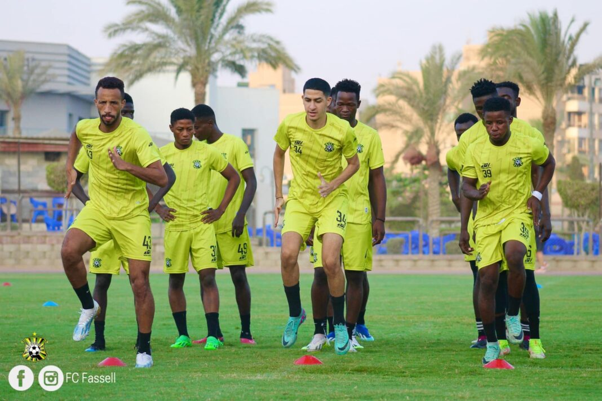

Our History
Founded in 2009, FC Fassell quickly rose through Liberia's football divisions, establishing itself as a formidable force in the Liberian football scene. The team is popularly known as the "Soccer Missionaries" and has been a strong presence in the Liberian First Division League.

Our club's foundation was built on the principles of excellence, dedication, and community development. From our humble beginnings, we have consistently demonstrated our commitment to not just winning matches, but also developing young talent and contributing to the growth of football in Liberia.
Early Years and Rapid Growth
FC Fassell made an immediate impact upon its formation, quickly establishing itself as a formidable force in the Liberian football scene. The club's early success was a testament to its strong organizational foundation and the strategic vision of its leadership.
The 2013-2014 season was a pivotal moment in the club's history, as FC Fassell clinched the top spot in the Second Division, earning promotion to the Liberian Premier League. This achievement marked the beginning of our journey among Liberia's elite football clubs.

Our rapid ascent through the divisions was not just about winning games; it was about building a sustainable football culture that would serve as a foundation for long-term success. The club invested heavily in youth development, coaching education, and infrastructure improvements.
Major Achievements
2014 Liberian Cup Triumph
The crowning achievement of FC Fassell's early years came in 2014 when the club won the prestigious Liberian Cup. This victory marked FC Fassell's emergence as a serious contender in Liberian football, solidifying our status as one of the top clubs in the country.
The triumph also earned the club a spot in the 2015 CAF Confederation Cup, where we made our debut on the continental stage, representing Liberia in the Preliminary Round. This international exposure was invaluable for the club's development and reputation.
Key Milestones
- Promoted to First Division in 2011
- Won the Liberian Cup in 2014
- Participated in CAF Confederation Cup 2015
- Reached multiple cup finals
- Developed over 50 professional players
- Established youth academy programs
- Built strong community partnerships
Vision for the Future
FC Fassell's vision extends beyond immediate success on the field. The club aims to build a sustainable model that nurtures young talent, promotes professionalism, and contributes to the overall growth of Liberian football.
With a focus on creating a balanced team that blends experience with youth, FC Fassell is poised to reclaim its position as one of Liberia's top football clubs. Our commitment to excellence drives every decision we make, from player recruitment to community engagement.
As we look toward the future, the club is gearing up for intensive training programs and strategic partnerships that will enhance our competitive edge. Our preparation includes comprehensive pre-season training camps where the squad fine-tunes their skills and team cohesion.
This preparation is crucial as FC Fassell aims to challenge for the Liberian Premier League title and make a significant impact in regional competitions. We are committed to representing Liberian football with pride and distinction on both national and international stages.
Notable Players
FC Fassell has been home to many skilled footballers who have represented Liberia internationally and have gone on to successful careers both domestically and abroad. Our commitment to player development has produced talents who embody the spirit of the Soccer Missionaries.
Our academy system continues to identify and nurture young talents, providing them with the technical skills, tactical knowledge, and professional attitude needed to succeed at the highest levels of football. Many of our graduates have gone on to represent the national team and play for clubs across West Africa.
The Soccer Missionaries Culture
The nickname "Soccer Missionaries" reflects our deep commitment to spreading the gospel of football excellence throughout Liberia. We believe that football is more than just a game; it's a vehicle for positive change, community development, and youth empowerment.
Our culture is built on core values of integrity, teamwork, perseverance, and community service. These values guide everything we do, from how we train and compete to how we engage with our supporters and the broader community.
We take pride in being role models both on and off the pitch, understanding that our actions and achievements inspire young people across Liberia to pursue their dreams with dedication and determination.